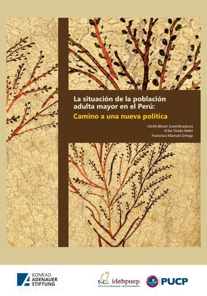
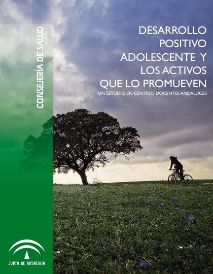
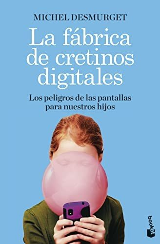
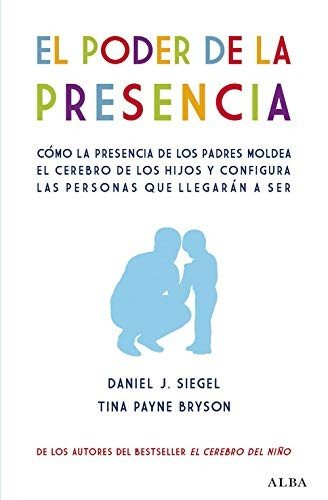

Libros de desarrollo psicológico a lo largo de la vida
Libros de desarrollo psicológico a lo largo de la vida en español: 99 libros completos para leer gratis aquí mismo y 18 fichas de títulos actuales.
Psicología del desarrolloPsicología de la adolescenciaDesarrollo socialDesarrollo moralEnvejecimiento psicológicoPsicología de la adultezDesarrollo de la autorregulaciónDesarrollo del lenguajeTeoría del apegoDesarrollo emocional infantilDesarrollo de la intimidadApego infantilDesarrollo de la personalidadDesarrollo cognitivo infantilDesarrollo motorTransiciones vitalesIdentidad adolescenteDesarrollo de la autonomíaDesarrollo prenatalApego adulto
Gamblificación, Juventud y Videojuegos: Bases para el Desarrollo de Planes de PrevenciónAmbròs Hortensi, Mireia; Rubio Jansana, Sònia
Gamblificación, Juventud y Videojuegos: Bases para el Desarrollo de Planes de PrevenciónAmbròs Hortensi, Mireia; Rubio Jansana, SòniaMarco de competencias y resultados para la salud y el bienestar en la adolescencia
Marco de competencias y resultados para la salud y el bienestar en la adolescenciaDesarrollo y aprendizaje en la adolescencia: máster formación del profesorado
Desarrollo y aprendizaje en la adolescencia: máster formación del profesoradoDuelos migratorios y estrés aculturativo en la niñez y la adolescencia migrante. Un estudio etnográfico en Oaxaca, MéxicoRodríguez Cruz, Marta
Duelos migratorios y estrés aculturativo en la niñez y la adolescencia migrante. Un estudio etnográfico en Oaxaca, MéxicoRodríguez Cruz, MartaEscalas mundiales de medición del desarrollo en la primera infancia (GSED-SF) v. 1.0: Formulario corto de entrevista al cuidador. Guía de los ítems
Escalas mundiales de medición del desarrollo en la primera infancia (GSED-SF) v. 1.0: Formulario corto de entrevista al cuidador. Guía de los ítemsEstereotipos sobre el envejecimiento en una muestra universitaria de Ciencias de la SaludAlarcón Aguilar, Ana H.; Rojano-Hidalgo, Mario; Calero Galindo, Luis
Estereotipos sobre el envejecimiento en una muestra universitaria de Ciencias de la SaludAlarcón Aguilar, Ana H.; Rojano-Hidalgo, Mario; Calero Galindo, LuisImpacto de la música en el desarrollo cognitivo y neuronal: explorando beneficios y desafíosGonzález Hernández, Edurne; Bausela Herreras, Esperanza; Lorenzo de Reizábal, Arantza
Impacto de la música en el desarrollo cognitivo y neuronal: explorando beneficios y desafíosGonzález Hernández, Edurne; Bausela Herreras, Esperanza; Lorenzo de Reizábal, ArantzaSíntomas psicóticos en el adulto mayor: definiciones, epidemiología, diagnóstico y tratamientoRentería Daboin, Johny Alexander; Urrea Vargas, Maria Juliana
Síntomas psicóticos en el adulto mayor: definiciones, epidemiología, diagnóstico y tratamientoRentería Daboin, Johny Alexander; Urrea Vargas, Maria JulianaVideojuegos comerciales de realidad virtual inmersiva en neurorrehabilitaciónMartín Nogueras, Ana María; Lillo-Sánchez, Elena; Gomez Mateos, Marta; Bermejo Gil, Beatriz María; Calleja-Caballero, Andrea; Llamas Ramos, Rocío; Orejuela-Rodríguez, Jesús; Sánchez González, Juan Lui
Videojuegos comerciales de realidad virtual inmersiva en neurorrehabilitaciónMartín Nogueras, Ana María; Lillo-Sánchez, Elena; Gomez Mateos, Marta; Bermejo Gil, Beatriz María; Calleja-Caballero, Andrea; Llamas Ramos, Rocío; Orejuela-Rodríguez, Jesús; Sánchez González, Juan LuiDesarrollo positivo adolescente: ¿qué papel tiene la inteligencia emocional, el estilo de afrontamiento y la asertividad en la prevención del consumo de cannabis?González Yubero, Sara; Gallego Álvarez, Teresa; Recio Moreno, David
Desarrollo positivo adolescente: ¿qué papel tiene la inteligencia emocional, el estilo de afrontamiento y la asertividad en la prevención del consumo de cannabis?González Yubero, Sara; Gallego Álvarez, Teresa; Recio Moreno, DavidEn la tela de araña. Las violencias contra la infancia y la lucha de las madres protectoras.Sepur, Berta; Teruel, Justa; Palenciano, Pamela; Larreynaga, Iván; Ávila, Débora; Malo, Marta; Escudero Nafs, Antonio; Pérez Pérez, Marta; Franzé, Adela; Peñaranda, María Carmen; Cabezas Fernández, Ma
En la tela de araña. Las violencias contra la infancia y la lucha de las madres protectoras.Sepur, Berta; Teruel, Justa; Palenciano, Pamela; Larreynaga, Iván; Ávila, Débora; Malo, Marta; Escudero Nafs, Antonio; Pérez Pérez, Marta; Franzé, Adela; Peñaranda, María Carmen; Cabezas Fernández, MaEnvejecer con derechos: la participación social de los adultos mayoresBósquez Salas, Diana Vanessa
Envejecer con derechos: la participación social de los adultos mayoresBósquez Salas, Diana VanessaHabilidades para el manejo de emociones en la adolescencia tempranaOrganización Mundial de la Salud
Habilidades para el manejo de emociones en la adolescencia tempranaOrganización Mundial de la SaludLa diversidad educativa en el desarrollo socioemocional: inteligencia emocional y altas capacidadesGallego Álvarez, Teresa; Recio Moreno, David; González Yubero, Sara
La diversidad educativa en el desarrollo socioemocional: inteligencia emocional y altas capacidadesGallego Álvarez, Teresa; Recio Moreno, David; González Yubero, SaraLa salud mental es cosa de niños, niñas y adolescentes. Barómetro de Opinión de la Infancia y Adolescencia 2023-2024Ramos Valverde, Pilar; Luna Rivas, Sara; Rivera de los Santos, Francisco José; Moreno Rodríguez, María del Carmen; Moreno Maldonado, Concepción; Leal López, Eva; Majón Valpuesta, Dolores; Villafuerte 
La salud mental es cosa de niños, niñas y adolescentes. Barómetro de Opinión de la Infancia y Adolescencia 2023-2024Ramos Valverde, Pilar; Luna Rivas, Sara; Rivera de los Santos, Francisco José; Moreno Rodríguez, María del Carmen; Moreno Maldonado, Concepción; Leal López, Eva; Majón Valpuesta, Dolores; Villafuerte Álbum ilustrado: desarrollo del lenguaje y educación literaria en la primera infanciaGala Pellicer, Susana
Álbum ilustrado: desarrollo del lenguaje y educación literaria en la primera infanciaGala Pellicer, SusanaAutoayuda Plus (AAyuda+). Curso grupal de manejo del estrés para personas adultas. Versión genérica de ensayo 1.0, 2021
Autoayuda Plus (AAyuda+). Curso grupal de manejo del estrés para personas adultas. Versión genérica de ensayo 1.0, 2021Crítica cultural y psicología: la teoría del apego en EcuadorVillamarín Bernal, Glenda Zulay
Crítica cultural y psicología: la teoría del apego en EcuadorVillamarín Bernal, Glenda ZulayDécada del Envejecimiento Saludable: Informe de referencia
Década del Envejecimiento Saludable: Informe de referenciaEL AUTOAPRENDIZAJE COMO DESARROLLO PERSONALHERNÁNDEZ FERNÁNDEZ, ANTONIO; DE BARROS CAMARGO, CLAUDIA
EL AUTOAPRENDIZAJE COMO DESARROLLO PERSONALHERNÁNDEZ FERNÁNDEZ, ANTONIO; DE BARROS CAMARGO, CLAUDIAProyecto I: una nueva agenda sobre la vejez y el envejecimiento activo. Una mirada multidimensional. Intervenciones desde el campo de la educaciónKlin, Patricia
Proyecto I: una nueva agenda sobre la vejez y el envejecimiento activo. Una mirada multidimensional. Intervenciones desde el campo de la educaciónKlin, PatriciaProcesos interoceptivos y propioceptivos en autistas adultosRocha Romero, Ángela Tatiana
Procesos interoceptivos y propioceptivos en autistas adultosRocha Romero, Ángela TatianaAlimentación y nutrición en la adolescencia: contenidos y actividades para la promoción de entornos escolares saludablesRomán, María Dolores; Moos, Ana C; Berra, Silvina
Alimentación y nutrición en la adolescencia: contenidos y actividades para la promoción de entornos escolares saludablesRomán, María Dolores; Moos, Ana C; Berra, SilvinaDirectrices sobre las intervenciones de promoción y prevención en materia de salud mental para adolescentesOrganización Mundial de la Salud
Directrices sobre las intervenciones de promoción y prevención en materia de salud mental para adolescentesOrganización Mundial de la SaludEl cuidado cariñoso y sensible para el desarrollo en la primera infancia. Marco para ayudar a los niños y niñas a sobrevivir y prosperar a fin de transformar la salud y el potencial humano
El cuidado cariñoso y sensible para el desarrollo en la primera infancia. Marco para ayudar a los niños y niñas a sobrevivir y prosperar a fin de transformar la salud y el potencial humanoEnfrentar problemas plus (EP+ grupal): ayuda psicológica grupal para personas adultas con problemas de angustia en comunidades expuestas a la adversidad (versión genérica de prueba sobre el terreno 1.0)
Enfrentar problemas plus (EP+ grupal): ayuda psicológica grupal para personas adultas con problemas de angustia en comunidades expuestas a la adversidad (versión genérica de prueba sobre el terreno 1.0)Envejecimiento, actividad física y desarrollo emocionalOlga Bruna, Isabel Carrera Blancafort, Mercè Gimeno-Santos y otros
Envejecimiento, actividad física y desarrollo emocionalOlga Bruna, Isabel Carrera Blancafort, Mercè Gimeno-Santos y otrosEscala AUTODDIS: Evaluación de la autodeterminación de jóvenes y adultos con discapacidad intelectual. Manual de aplicación y correcciónVerdugo Alonso, Miguel Ángel; Vicente Sánchez, Eva; Guillén Martín, Verónica Marina; Sánchez Fuentes, Sergio; Ibáñez García, Alba; Fernández Pulido, Ramón; Gómez Sánchez, Laura E.; Coma Roselló, Teres
Escala AUTODDIS: Evaluación de la autodeterminación de jóvenes y adultos con discapacidad intelectual. Manual de aplicación y correcciónVerdugo Alonso, Miguel Ángel; Vicente Sánchez, Eva; Guillén Martín, Verónica Marina; Sánchez Fuentes, Sergio; Ibáñez García, Alba; Fernández Pulido, Ramón; Gómez Sánchez, Laura E.; Coma Roselló, TeresEscala SIS-C de Evaluación de las Necesidades de Apoyo para niños y adolescentes con discapacidades intelectuales y del desarrollo: proyectos de Investigación del Ministerio de Economía y Competitividad (MINECO; PSI2012-36278) y de la Junta de Castilla y León (SA120U13)Verdugo Alonso, Miguel Ángel; Arias Martínez, Benito; Guillén Martín, Verónica Marina; Amor González, Antonio Manuel; Aguayo Romero, Virginia; Vicente Sánchez, Eva; Jiménez Navarro, Pedro Manuel
Escala SIS-C de Evaluación de las Necesidades de Apoyo para niños y adolescentes con discapacidades intelectuales y del desarrollo: proyectos de Investigación del Ministerio de Economía y Competitividad (MINECO; PSI2012-36278) y de la Junta de Castilla y León (SA120U13)Verdugo Alonso, Miguel Ángel; Arias Martínez, Benito; Guillén Martín, Verónica Marina; Amor González, Antonio Manuel; Aguayo Romero, Virginia; Vicente Sánchez, Eva; Jiménez Navarro, Pedro ManuelEstrategias de acompañamiento tutorial para el desarrollo de las emociones en el contexto de las prácticas de formación del profesoradoVaz Fernandes Catalino Procópio, Leandra; Sevilla Izquierdo, Carmen María
Estrategias de acompañamiento tutorial para el desarrollo de las emociones en el contexto de las prácticas de formación del profesoradoVaz Fernandes Catalino Procópio, Leandra; Sevilla Izquierdo, Carmen MaríaPerspectiva cognitiva del estudio del desarrollo de la escritura y sus alteracionesMiranda, María Agustina
Perspectiva cognitiva del estudio del desarrollo de la escritura y sus alteracionesMiranda, María AgustinaPrograma de promoción de la Salud Mental Positiva para adultos (Mentis Plus+): manual de apoyoTeixeira, Sonia; Sequeira, Carlos; Lluch Canut, Ma. Teresa
Programa de promoción de la Salud Mental Positiva para adultos (Mentis Plus+): manual de apoyoTeixeira, Sonia; Sequeira, Carlos; Lluch Canut, Ma. TeresaSer adolescente. ¿Transición o destino?Fandiño, Ricardo; Rodriguez-Pousada, Vanessa
Ser adolescente. ¿Transición o destino?Fandiño, Ricardo; Rodriguez-Pousada, VanessaTaller. Desarrollando mis competencias emocionales. Caminando hacia la resilienciaMojica Ramírez, Leticia
Taller. Desarrollando mis competencias emocionales. Caminando hacia la resilienciaMojica Ramírez, LeticiaDirectrices de la OMS para el manejo de los problemas de salud física en adultos con trastornos mentales graves
Directrices de la OMS para el manejo de los problemas de salud física en adultos con trastornos mentales gravesEnseñanza de las habilidades comunicativas en la infanciaHurtado Vergara, Rubén Darío (Coordinador); Chaverra Fernández, Dora Inés; Restrepo Calderón, Luz Adriana; Calle Álvarez, Gerzon Yair; Gallego Betancur, Teresita María; Jiménez Rendón, Bilian Alcides;
Enseñanza de las habilidades comunicativas en la infanciaHurtado Vergara, Rubén Darío (Coordinador); Chaverra Fernández, Dora Inés; Restrepo Calderón, Luz Adriana; Calle Álvarez, Gerzon Yair; Gallego Betancur, Teresita María; Jiménez Rendón, Bilian Alcides;Notas sobre el juego hoyRoxana Elizabeth Gaudio, Andrea Elizabeth Mirc
Notas sobre el juego hoyRoxana Elizabeth Gaudio, Andrea Elizabeth MircPsicología del desarrolloGrippo, Leticia
Psicología del desarrolloGrippo, LeticiaDificultades del lenguaje en los trastornos del desarrollo (vol. III): factores de riesgo y dificultades comórbidasAguilar-Mediavilla, Eva; Bosch Galceran, Laura; Agut, Thais; Busquets Ferré, Lourdes; Sureda Garcia, Inmaculada; Valera-Pozo, Mario; Alvarado Alonso, Helena; Pérez Castelló, Josep Antoni; Sanchez-Azan
Dificultades del lenguaje en los trastornos del desarrollo (vol. III): factores de riesgo y dificultades comórbidasAguilar-Mediavilla, Eva; Bosch Galceran, Laura; Agut, Thais; Busquets Ferré, Lourdes; Sureda Garcia, Inmaculada; Valera-Pozo, Mario; Alvarado Alonso, Helena; Pérez Castelló, Josep Antoni; Sanchez-AzanEl desarrollo del lenguaje y la comunicación en la infanciaAparici, Melina; Igualada, Alfonso; Esteve-Gibert, Núria; Andrés-Roqueta, Clara; QUER, JOSEP; Sánchez Amat, Jordina
El desarrollo del lenguaje y la comunicación en la infanciaAparici, Melina; Igualada, Alfonso; Esteve-Gibert, Núria; Andrés-Roqueta, Clara; QUER, JOSEP; Sánchez Amat, JordinaLa lucha sexual de los adolescentes en la hipermodernidadRicardo Fandiño, Vanessa Rodríguez-Pousada
La lucha sexual de los adolescentes en la hipermodernidadRicardo Fandiño, Vanessa Rodríguez-PousadaLa situación de la población adulta mayor en el Perú: camino a una nueva políticaBlouin, Cécile; Tirado Rao, Erika; Mamani Ortega, Francisco
La situación de la población adulta mayor en el Perú: camino a una nueva políticaBlouin, Cécile; Tirado Rao, Erika; Mamani Ortega, Francisco
Barómetro de opinión de la infancia. Manual para su usoMoreno Rodríguez, María del Carmen; Rivera de los Santos, Francisco José; Sánchez Queija, María Inmaculada; Jiménez Iglesias, Antonia María; García Moya, Irene; Moreno Maldonado, Concepción; Paniagua 
Barómetro de opinión de la infancia. Manual para su usoMoreno Rodríguez, María del Carmen; Rivera de los Santos, Francisco José; Sánchez Queija, María Inmaculada; Jiménez Iglesias, Antonia María; García Moya, Irene; Moreno Maldonado, Concepción; Paniagua Manual práctico de patología del lenguaje. Evaluación e intervención en adultos y niñosLeiva Madueño, Isabel; Vázquez De Sebastián, Julia
Manual práctico de patología del lenguaje. Evaluación e intervención en adultos y niñosLeiva Madueño, Isabel; Vázquez De Sebastián, JuliaPrevención de situaciones de ciberacoso en la adolescenciaRodríguez Domínguez, Carmen; Martínez Pecino, Roberto; Durán Segura, Mercedes
Prevención de situaciones de ciberacoso en la adolescenciaRodríguez Domínguez, Carmen; Martínez Pecino, Roberto; Durán Segura, MercedesBiología. Comportamiento, desarrollo y aprendizajeGlejzer, Claudio E.
Biología. Comportamiento, desarrollo y aprendizajeGlejzer, Claudio E.Infancias contemporáneas. Retos educativosMedel García, Encarna
Infancias contemporáneas. Retos educativosMedel García, EncarnaLa atención psicoeducativa en la primera infancia. Evaluación de centros, servicios y programasSecanilla Campo, Esther Maria
La atención psicoeducativa en la primera infancia. Evaluación de centros, servicios y programasSecanilla Campo, Esther MariaLos adolescentes españoles: estilos de vida, salud, ajuste psicológico y relaciones en sus contextos de desarrollo. Resultados del Estudio HBSC-2014 en EspañaMoreno Rodríguez, María del Carmen; Ramos Valverde, Pilar; Rivera de los Santos, Francisco José; Jiménez Iglesias, Antonia María; García Moya, Irene; Sánchez Queija, María Inmaculada; Moreno Maldonado
Los adolescentes españoles: estilos de vida, salud, ajuste psicológico y relaciones en sus contextos de desarrollo. Resultados del Estudio HBSC-2014 en EspañaMoreno Rodríguez, María del Carmen; Ramos Valverde, Pilar; Rivera de los Santos, Francisco José; Jiménez Iglesias, Antonia María; García Moya, Irene; Sánchez Queija, María Inmaculada; Moreno MaldonadoCognición social y lenguaje : la intersubjetividad en la evolución de la especie y en el desarrollo del niñoQuintanilla Pérez Wicht, Pablo; Mantilla Lagos, Carla; Cépeda, Paola
Cognición social y lenguaje : la intersubjetividad en la evolución de la especie y en el desarrollo del niñoQuintanilla Pérez Wicht, Pablo; Mantilla Lagos, Carla; Cépeda, PaolaEl vínculo de apego como escenario para el desarrollo de la cognición social tempranaMantilla Lagos, Carla
El vínculo de apego como escenario para el desarrollo de la cognición social tempranaMantilla Lagos, CarlaEscala de Afectividad (PANAS) de Watson y Clark en Adultos MayoresBlanco Molina, Mauricio; Salazar Villanea, Mónica
Escala de Afectividad (PANAS) de Watson y Clark en Adultos MayoresBlanco Molina, Mauricio; Salazar Villanea, MónicaProyecto Apego sobre evaluación y promoción de competencias parentales en el sistema sanitario público andaluz. Parte 2Palacios González, Jesús; Oliva Delgado, Alfredo; Moreno Rodríguez, María del Carmen; González Rodríguez, María del Mar; Hidalgo García, María Victoria; Jiménez Morago, Jesús Miguel; Antolín Suárez, L
Proyecto Apego sobre evaluación y promoción de competencias parentales en el sistema sanitario público andaluz. Parte 2Palacios González, Jesús; Oliva Delgado, Alfredo; Moreno Rodríguez, María del Carmen; González Rodríguez, María del Mar; Hidalgo García, María Victoria; Jiménez Morago, Jesús Miguel; Antolín Suárez, LVínculos protectores : apego en padres e hijos en vulnerabilidadGeenen, Greet; Corveleyn, Jozef; Traverso Koroleff, Pierina; Llanos Bustamante, Eduardo
Vínculos protectores : apego en padres e hijos en vulnerabilidadGeenen, Greet; Corveleyn, Jozef; Traverso Koroleff, Pierina; Llanos Bustamante, EduardoPropuestas para la promoción del desarrollo positivo adolescenteOliva Delgado, Alfredo; Pertegal Vega, Miguel Ángel; Antolín Suárez, Lucía; Reina Flores, María del Carmen; Parra Jiménez, Águeda; Hernando Gómez, Ángel; Pascual García, Diana Mª; Estévez Campos, Rosa
Propuestas para la promoción del desarrollo positivo adolescenteOliva Delgado, Alfredo; Pertegal Vega, Miguel Ángel; Antolín Suárez, Lucía; Reina Flores, María del Carmen; Parra Jiménez, Águeda; Hernando Gómez, Ángel; Pascual García, Diana Mª; Estévez Campos, RosaActivos para el desarrollo positivo y la salud mental en la adolescenciaOliva Delgado, Alfredo; Reina Flores, María del Carmen; Hernando Gómez, Ángel; Antolín Suárez, Lucía; Pertegal Vega, Miguel Ángel; Parra Jiménez, Águeda; Ríos Bermúdez, Moisés; Estévez Campos, Rosa Mª
Activos para el desarrollo positivo y la salud mental en la adolescenciaOliva Delgado, Alfredo; Reina Flores, María del Carmen; Hernando Gómez, Ángel; Antolín Suárez, Lucía; Pertegal Vega, Miguel Ángel; Parra Jiménez, Águeda; Ríos Bermúdez, Moisés; Estévez Campos, Rosa MªAprendizaje, cultura y desarrollo : una aproximación interdisciplinariaFrisancho, Susana
Aprendizaje, cultura y desarrollo : una aproximación interdisciplinariaFrisancho, SusanaDesarrollo adolescente y salud en España: Resumen del estudio Health Behaviour in School Aged Children (HBSC-2006)Ramos Valverde, Pilar; Moreno Rodríguez, María del Carmen; Rivera de los Santos, Francisco José; Muñoz Tinoco, María Victoria; Sánchez Queija, María Inmaculada; Granado Alcón, María del Carmen; Jiméne
Desarrollo adolescente y salud en España: Resumen del estudio Health Behaviour in School Aged Children (HBSC-2006)Ramos Valverde, Pilar; Moreno Rodríguez, María del Carmen; Rivera de los Santos, Francisco José; Muñoz Tinoco, María Victoria; Sánchez Queija, María Inmaculada; Granado Alcón, María del Carmen; JiméneDesarrollo positivo adolescente y los activos que lo promueven: Un estudio en centros docentes andalucesOliva Delgado, Alfredo; Pertegal Vega, Miguel Ángel; Antolín Suárez, Lucía; Reina Flores, María del Carmen; Ríos Bermúdez, Moisés; Hernando Gómez, Ángel; Parra Jiménez, Águeda; Pascual García, Diana M
Desarrollo positivo adolescente y los activos que lo promueven: Un estudio en centros docentes andalucesOliva Delgado, Alfredo; Pertegal Vega, Miguel Ángel; Antolín Suárez, Lucía; Reina Flores, María del Carmen; Ríos Bermúdez, Moisés; Hernando Gómez, Ángel; Parra Jiménez, Águeda; Pascual García, Diana M
Instrumentos para la evaluación de la salud mental y el desarrollo positivo adolescente y los activos que lo promuevenOliva Delgado, Alfredo; Antolín Suárez, Lucía; Pertegal Vega, Miguel Ángel; Ríos Bermúdez, Moisés; Parra Jiménez, Águeda; Hernando Gómez, Ángel; Reina Flores, María del Carmen
Instrumentos para la evaluación de la salud mental y el desarrollo positivo adolescente y los activos que lo promuevenOliva Delgado, Alfredo; Antolín Suárez, Lucía; Pertegal Vega, Miguel Ángel; Ríos Bermúdez, Moisés; Parra Jiménez, Águeda; Hernando Gómez, Ángel; Reina Flores, María del CarmenNiñez y adolescencia: Prácticas institucionales desde el enfoque de derechosVives, Carmela
Niñez y adolescencia: Prácticas institucionales desde el enfoque de derechosVives, CarmelaEl desarrollo del niño, vía para el desarrollo humanoThorne, Cecilia
El desarrollo del niño, vía para el desarrollo humanoThorne, CeciliaLa promoción del desarrollo adolescente: Recursos y estrategias de intervenciónOliva Delgado, Alfredo; Hernando Gómez, Ángel; Parra Jiménez, Águeda; Pertegal Vega, Miguel Ángel; Ríos Bermúdez, Moisés; Antolín Suárez, Lucía
La promoción del desarrollo adolescente: Recursos y estrategias de intervenciónOliva Delgado, Alfredo; Hernando Gómez, Ángel; Parra Jiménez, Águeda; Pertegal Vega, Miguel Ángel; Ríos Bermúdez, Moisés; Antolín Suárez, LucíaPreocupaciones sociales sobre la infancia y la adolescenciaBericat Alastuey, Eduardo; Zambrano Álvarez, Inmaculada
Preocupaciones sociales sobre la infancia y la adolescenciaBericat Alastuey, Eduardo; Zambrano Álvarez, InmaculadaMamitis y los traumas del desarrollo en una colonia popular de la ciudad de MéxicoGutmann, Matthew C.
Mamitis y los traumas del desarrollo en una colonia popular de la ciudad de MéxicoGutmann, Matthew C.Desarrollo del juicio moral y de la complejidad cognitiva a través de un diseño instruccionalFrisancho, Susana
Desarrollo del juicio moral y de la complejidad cognitiva a través de un diseño instruccionalFrisancho, SusanaEl pensamiento formal y la inteligencia adulta : un estudio realizado en LimaMontenegro Serkovic, Estela
El pensamiento formal y la inteligencia adulta : un estudio realizado en LimaMontenegro Serkovic, EstelaNuestros niños son talentosos : como reconocer y desarrollar sus talentos. Manual para padres y maestrosMönks, Franz J.; Ypenburg, Irene H.; Blumen, Sheyla
Nuestros niños son talentosos : como reconocer y desarrollar sus talentos. Manual para padres y maestrosMönks, Franz J.; Ypenburg, Irene H.; Blumen, SheylaPsicología del desarrollo : el mundo del adolescenteUniversitat de Barcelona. Institut de Ciències de l'Educació; Martí Sala, Eduardo; Onrubia Goñi, Javier; Fierro, Alfredo, 1936-; Gispert, Inés de; Garcia-Milà, Mercè
Psicología del desarrollo : el mundo del adolescenteUniversitat de Barcelona. Institut de Ciències de l'Educació; Martí Sala, Eduardo; Onrubia Goñi, Javier; Fierro, Alfredo, 1936-; Gispert, Inés de; Garcia-Milà, MercèOrientación vocacional no discriminatoria: propuestas desde el modelo activación del desarrollo vocacional y personalRomero Rodríguez, Soledad
Orientación vocacional no discriminatoria: propuestas desde el modelo activación del desarrollo vocacional y personalRomero Rodríguez, SoledadDe las localizaciones cerebrales con motivo de un notable caso de herida del cerebro: tema desarrollado en la Academia Médico-farmacéuticaPlanellas i Llanós, Alexandre, 1856-1927
De las localizaciones cerebrales con motivo de un notable caso de herida del cerebro: tema desarrollado en la Academia Médico-farmacéuticaPlanellas i Llanós, Alexandre, 1856-1927Desarrollo evolutivo y psicopatología infanto-juvenilAmador, Juan Antonio; Krieger, Virginia
Desarrollo evolutivo y psicopatología infanto-juvenilAmador, Juan Antonio; Krieger, VirginiaAdolescencia en situación de desamparo: hacia recursos residenciales socialmente sosteniblesSarasa Camacho, Hodei
Adolescencia en situación de desamparo: hacia recursos residenciales socialmente sosteniblesSarasa Camacho, HodeiAnálisis y desarrollo de competencias en el Grado en Psicología: Capacidad de describir y medir variables psicológicasLucas-Molina, Beatriz; García Ros, Rafael; Fuentes, María C.
Análisis y desarrollo de competencias en el Grado en Psicología: Capacidad de describir y medir variables psicológicasLucas-Molina, Beatriz; García Ros, Rafael; Fuentes, María C.Intervención familiar en protección a la infancia y la adolescencia: la adopción como medida de protecciónRomán Rodríguez, Maite; Palacios González, Jesús
Intervención familiar en protección a la infancia y la adolescencia: la adopción como medida de protecciónRomán Rodríguez, Maite; Palacios González, JesúsLa intervención familiar durante la adolescenciaOliva Delgado, Alfredo; Parra Jiménez, Águeda
La intervención familiar durante la adolescenciaOliva Delgado, Alfredo; Parra Jiménez, ÁguedaManual de Prácticas de Psicología del desarrollo, infancia y adolescencia para alumnos del Grado en Magisterio Educación Primaria 2024-2025 [Recurso Educativo Abierto]Esteban Sánchez, Laura
Manual de Prácticas de Psicología del desarrollo, infancia y adolescencia para alumnos del Grado en Magisterio Educación Primaria 2024-2025 [Recurso Educativo Abierto]Esteban Sánchez, LauraPsicología médica. Parte III: personalidad y psicología del desarrolloGarcía Arroyo, José Manuel
Psicología médica. Parte III: personalidad y psicología del desarrolloGarcía Arroyo, José ManuelEnvejecimiento y demencias, febrero 2021Matias-Guiu, Jordi A.; Gelonch Rosinach, Olga; Calabria, Marco
Envejecimiento y demencias, febrero 2021Matias-Guiu, Jordi A.; Gelonch Rosinach, Olga; Calabria, MarcoPsicología del desarrollo: infancia, septiembre 2021García Vadillo, Alicia; Casadevall Sala, Anna; weise, crista; Rosell Fernández, Laura; Grane, Mariona
Psicología del desarrollo: infancia, septiembre 2021García Vadillo, Alicia; Casadevall Sala, Anna; weise, crista; Rosell Fernández, Laura; Grane, MarionaFamilias de madres solas por elección. Nuevos contextos de desarrollo y para la intervenciónGonzález Rodríguez, María del Mar; Díez López, Marta; Morgado Camacho, Beatriz María
Familias de madres solas por elección. Nuevos contextos de desarrollo y para la intervenciónGonzález Rodríguez, María del Mar; Díez López, Marta; Morgado Camacho, Beatriz MaríaIntervención Educativa para la Inclusión Social: Los Equipos de Atención a la Infancia y a la Adolescencia (EAIA)Mateos Inchaurrondo, Ainoa
Intervención Educativa para la Inclusión Social: Los Equipos de Atención a la Infancia y a la Adolescencia (EAIA)Mateos Inchaurrondo, AinoaIntroducción a la psicología del desarrolloManuel Casado Gómez
Introducción a la psicología del desarrolloManuel Casado GómezPromoción de la salud en la infancia y la adolescencia, febrero 2020Casañas, Rocio
Promoción de la salud en la infancia y la adolescencia, febrero 2020Casañas, RocioAtención a la infancia y a la adolescencia en riesgo, febrero 2019Vergara Campos, María
Atención a la infancia y a la adolescencia en riesgo, febrero 2019Vergara Campos, MaríaManual de contenidos y actividades 2015: Cátedra Integral Niños y Adolescentes “A”Rugani, Marta Leonor; Damiani, Patricia María; Rubial, María Cristina; Villalba, Silvina Beatriz; Pavani Carrillo, Jorge José; Albornoz, Cristina Inés; Goldenberg, Rosa Mariela; Melano, Marianela
Manual de contenidos y actividades 2015: Cátedra Integral Niños y Adolescentes “A”Rugani, Marta Leonor; Damiani, Patricia María; Rubial, María Cristina; Villalba, Silvina Beatriz; Pavani Carrillo, Jorge José; Albornoz, Cristina Inés; Goldenberg, Rosa Mariela; Melano, MarianelaCrecimiento y desarrollo de la biología a la educación y la saludBarrón, Margarita; Arce, Sonia; Borioli, Gloria; Brandenburg, Graciela; Carbonetti, Mario Eduardo; Carbonetti, Mario Julio; Carena Bruno, María Cristina; Córdoba, Julia; Eguillor Arias, Raquel Gabriel
Crecimiento y desarrollo de la biología a la educación y la saludBarrón, Margarita; Arce, Sonia; Borioli, Gloria; Brandenburg, Graciela; Carbonetti, Mario Eduardo; Carbonetti, Mario Julio; Carena Bruno, María Cristina; Córdoba, Julia; Eguillor Arias, Raquel GabrielDesarrollo de las relaciones sociales en la primera infancia con población vulnerableRojas Mosquera, Isabel Cristina; Correa García, Yuliana; Ibarra Marín, Carolina; Murillo Henao, Francy Janeth; Tobón Cuartas, Juan Carlos
Desarrollo de las relaciones sociales en la primera infancia con población vulnerableRojas Mosquera, Isabel Cristina; Correa García, Yuliana; Ibarra Marín, Carolina; Murillo Henao, Francy Janeth; Tobón Cuartas, Juan CarlosGuía teórico-práctica de la cátedra integral niños y adolescentes "A" - Área OrtodonciaRugani, Marta Leonor; Damiani, Patricia María; Rubial, María Cristina; Villalba, Silvina Beatriz; Pavani Carrillo, Jorge José; Albornoz, Cristina Inés
Guía teórico-práctica de la cátedra integral niños y adolescentes "A" - Área OrtodonciaRugani, Marta Leonor; Damiani, Patricia María; Rubial, María Cristina; Villalba, Silvina Beatriz; Pavani Carrillo, Jorge José; Albornoz, Cristina InésEl desarrollo de los niños, paso a pasoMarta Sadurní, Carles Rostán Sánchez, Elisabet Serrat
El desarrollo de los niños, paso a pasoMarta Sadurní, Carles Rostán Sánchez, Elisabet SerratEl psicólogo ante las crisis de la vidaTeresa Pont i Amenós
El psicólogo ante las crisis de la vidaTeresa Pont i AmenósLos adolescentes en el siglo XXI. Un enfoque psicosocialAdolfo Perinat Maceres, Antonio Corral, Edelmira Domènech Llaberia y otros
Los adolescentes en el siglo XXI. Un enfoque psicosocialAdolfo Perinat Maceres, Antonio Corral, Edelmira Domènech Llaberia y otrosProtocolo de diagnóstico e intervención psicopedagógica: Guía No.4 de diagnóstico rápido; consejería en adolescenciaSoliz Torres, María Fernanda; Valverde, Soledad
Protocolo de diagnóstico e intervención psicopedagógica: Guía No.4 de diagnóstico rápido; consejería en adolescenciaSoliz Torres, María Fernanda; Valverde, SoledadUna infancia bajo amenazade muerte : los niños en situación de calle en las grandes urbes ColombianasZambrano Gutiérrez, Ivannsan; Rojas, Claudia; Cano Higuita, Yearleydi
Una infancia bajo amenazade muerte : los niños en situación de calle en las grandes urbes ColombianasZambrano Gutiérrez, Ivannsan; Rojas, Claudia; Cano Higuita, YearleydiFactores sociodemográficos y nutricionales relacionados con el desarrollo neuroconductual: estudio en niños y niñas pequeñas de una zona rural del EcuadorBreilh Paz y Miño, Jaime Eduardo; Handal, Alexis J.; Lozoff, Betsy; Harlow, Siobán D.
Factores sociodemográficos y nutricionales relacionados con el desarrollo neuroconductual: estudio en niños y niñas pequeñas de una zona rural del EcuadorBreilh Paz y Miño, Jaime Eduardo; Handal, Alexis J.; Lozoff, Betsy; Harlow, Siobán D.Desarrollo positivo y salud mental durante la adolescencia: recursos evolutivos y estrategias de intervenciónOliva Delgado, Alfredo; Hernando, Ángel; Parra Jiménez, Águeda; Pertegal Vega, Miguel Ángel; Ríos Bermúdez, Moisés; Antolín Suárez, Lucía; González, Carolina
Desarrollo positivo y salud mental durante la adolescencia: recursos evolutivos y estrategias de intervenciónOliva Delgado, Alfredo; Hernando, Ángel; Parra Jiménez, Águeda; Pertegal Vega, Miguel Ángel; Ríos Bermúdez, Moisés; Antolín Suárez, Lucía; González, CarolinaLa adolescenciaMoreno Hernandez, Amparo
La adolescenciaMoreno Hernandez, AmparoPsicología del desarrollo. Un enfoque sistémico Un enfoque sistémico. Tercera edición (incluye web)Perinat Maceres, Adolfo
Psicología del desarrollo. Un enfoque sistémico Un enfoque sistémico. Tercera edición (incluye web)Perinat Maceres, Adolfo Educación en valores y desarrollo moral : jornadas celebradas en Barcelona mayo 1995Universitat de Barcelona. Institut de Ciències de l'Educació; Organización de Estados Iberoamericanos; Buxarrais Estrada, Maria Rosa; Martínez Martín, Miquel
Educación en valores y desarrollo moral : jornadas celebradas en Barcelona mayo 1995Universitat de Barcelona. Institut de Ciències de l'Educació; Organización de Estados Iberoamericanos; Buxarrais Estrada, Maria Rosa; Martínez Martín, MiquelLa fábrica de cretinos digitalesMichel Desmurget
La fábrica de cretinos digitalesMichel Desmurget
Encuentra tu persona vitaminaMarian Rojas Estapé
Encuentra tu persona vitaminaMarian Rojas EstapéEl poder de la presenciaDaniel J. Siegel y Tina Payne Bryson
El poder de la presenciaDaniel J. Siegel y Tina Payne Bryson
El cerebro adolescenteFrances E. Jensen y Amy Ellis Nutt
El cerebro adolescenteFrances E. Jensen y Amy Ellis NuttEl cerebro del niño explicado a los padresÁlvaro Bilbao
El cerebro del niño explicado a los padresÁlvaro BilbaoSomos nuestro cerebroDick Swaab
Somos nuestro cerebroDick SwaabLas ventajas de ser invisibleStephen Chbosky
Las ventajas de ser invisibleStephen ChboskyTormenta cerebral. El poder y el propósito del cerebro adolescenteDaniel J. Siegel
Tormenta cerebral. El poder y el propósito del cerebro adolescenteDaniel J. SiegelAbrázame fuerteSue Johnson
Abrázame fuerteSue JohnsonLa campana de cristalSylvia Plath
La campana de cristalSylvia PlathDiarioAna Frank
DiarioAna FrankLos 7 hábitos de los adolescentes altamente efectivosSean Covey
Los 7 hábitos de los adolescentes altamente efectivosSean CoveyBésame muchoCarlos González
Bésame muchoCarlos GonzálezEl guardián entre el centenoJ. D. Salinger
El guardián entre el centenoJ. D. SalingerJuventud en éxtasisCarlos Cuauhtémoc Sánchez
Juventud en éxtasisCarlos Cuauhtémoc SánchezEl cerebro del niñoDaniel J. Siegel y Tina Payne Bryson
El cerebro del niñoDaniel J. Siegel y Tina Payne BrysonManeras de amarAmir Levine y Rachel Heller
Maneras de amarAmir Levine y Rachel HellerNadaCarmen Laforet
NadaCarmen LaforetTemas relacionados
¿Estás eligiendo carrera?
Haz gratis el test de orientación vocacional de AURZANE: intereses, aptitudes, autoconcepto y hábitos de estudio, con informe completo.